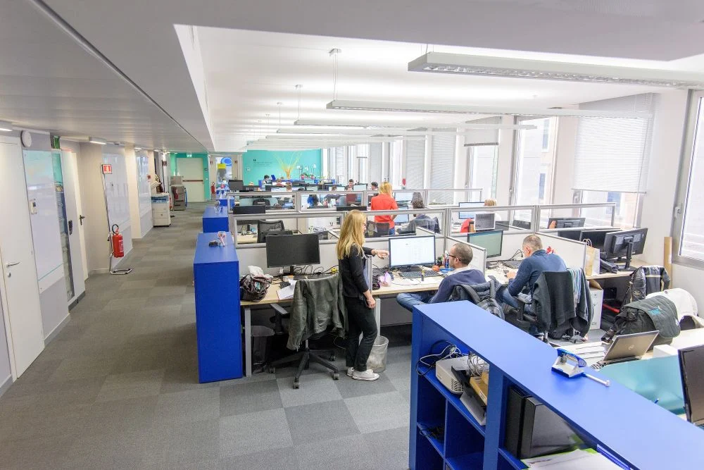

EXPERIENCE DESIGN
JOBRAPIDO
.gif)
Turning acquisition strength into sustainable user retention without breaking the revenue model.
SCROLL DOWN ↓
EXPERIENCE DESIGN
Turning acquisition strength into sustainable user retention without breaking the revenue model.
SCROLL DOWN ↓
01. ECOSYSTEM CONTEXT
Jobrapido is a global job search aggregator operating at significant scale.
Despite strong acquisition through search engines, the product faced a retention challenge: many users would browse a small number of listings and not return.
02. MY ROLE
I worked directly within the core product team, working across three retention initiatives.
Due to the absence of a dedicated designer, I owned both product and interaction design responsibilities alongside product management work. I led research, designed and tested interface solutions, ran experiments, and collaborated with engineering on implementation within a revenue-constrained environment.

03. THE GROWTH FRICTION
Search Experience
Disrupted Browsing Loops
Each job click redirected users to external sites, breaking the on-platform experience and preventing the formation of a continuous browsing loop.
Subscription Models
Premature Conversion Friction
Subscription prompts appeared too early in the user journey, asking for commitment before sufficient value had been established, reducing conversion trust.
ML Integration
High Cognitive Search Fatigue
Basic filtering systems made it difficult to surface relevant listings, increasing cognitive load and causing users to abandon searches early.
04. THE INTERVENTIONS
Because Jobrapido’s revenue depends on traffic and ads, major structural changes were not viable. Each intervention was designed to improve user experience incrementally while preserving the core business model.


05. THE DESIGN
Intervention 01 was not a single redesign — it was a progressive architectural shift. The framework moved from baseline to MVP to target state, validating user impact at each stage before introducing any risk to the platform's ad-revenue model.
06. THE EARNED ASK
BEFORE
Immediate Ask
High-frequency modals interrupted users immediately on arrival — demanding a subscription opt-in before the platform had demonstrated any tangible value. Exit rates spiked at the modal trigger point.
IMPLEMENTED →
Earn the Ask
The subscription prompt was repositioned to trigger only after a user engaged with multiple native listings, demonstrating genuine interest. Value-driven copy replaced high-friction commands. The result: a 10% absolute lift in subscription conversion.
Behavioral placement and conversational tone are not secondary concerns — they are primary revenue levers.
07. MEASURABLE OUTCOMES
10%
ABSOLUTE LIFT IN
SUBSCRIPTION RATES
89%
ZERO-SHOT TAXONOMY
CLASSIFICATION ACCURACY
CONVERSION LIFT
A 10% absolute increase in user subscription rates was achieved through the "Earn the Ask" behavioral repositioning and A/B copy optimization. This validated that temporal placement — not just interface structure — is a primary driver of conversion performance.
TECHNICAL VALIDATION
Mixtral achieved 89% taxonomy classification accuracy via zero-shot prompting — identifying it as a viable automated classification engine. Prior to concluding the internship, I delivered a comprehensive implementation blueprint, high-fidelity design specifications, and a phased, revenue-safe launch schedule to engineering.
08. SYSTEMIC TAKEAWAY
This internship shifted my understanding of design from isolated interface optimization to system-level thinking shaped by business constraints. I learned to balance user experience with an ad-driven revenue model through iterative testing and validation. The key outcome was not a single feature, but a reusable decision-making framework for the product team.